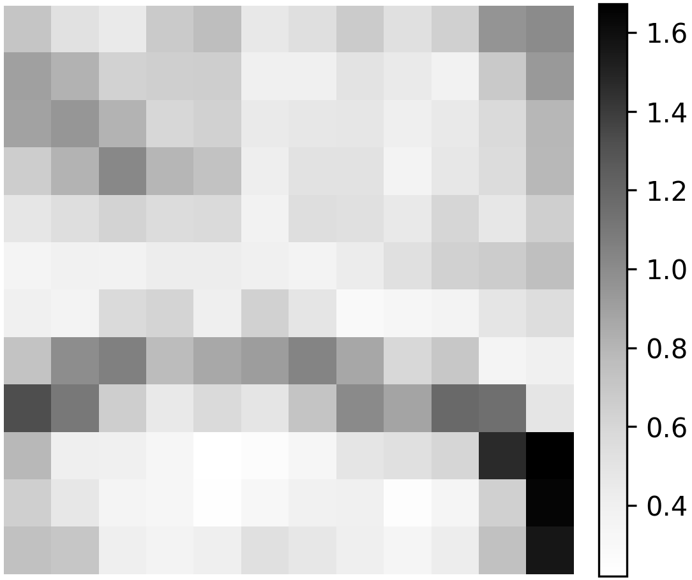
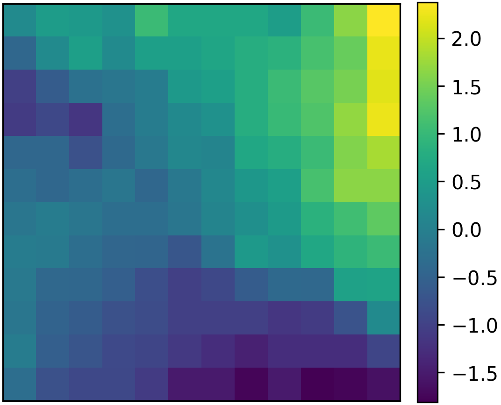
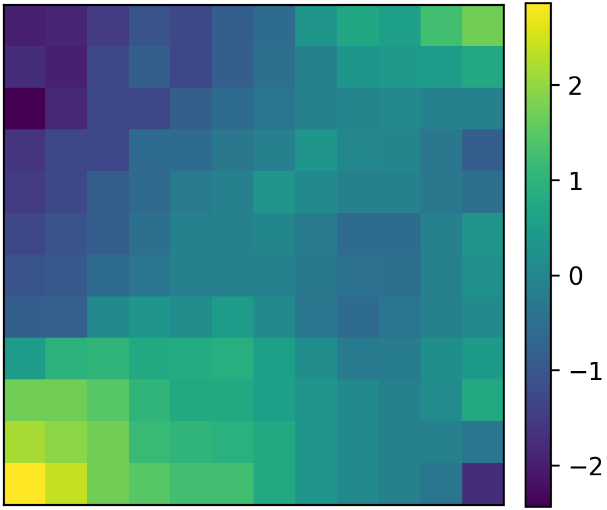
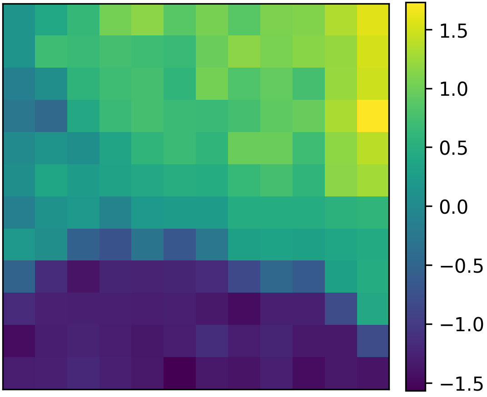
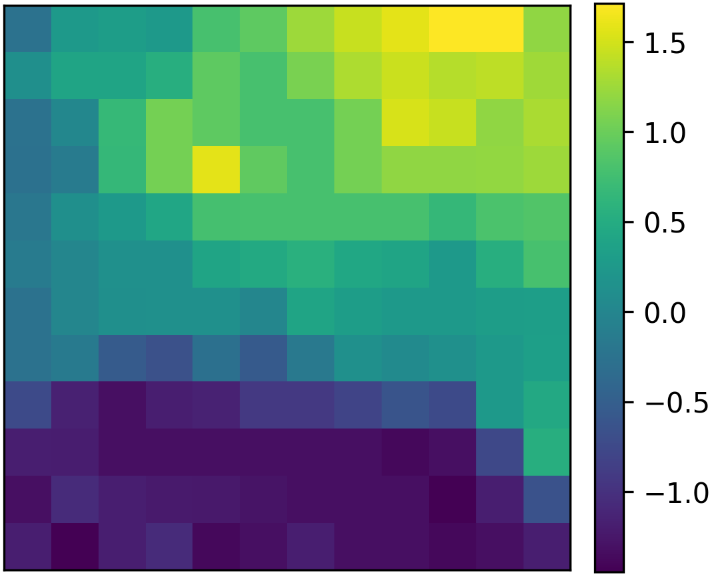

Machine-learning guide
Self-organising maps
The thesis appendix retains the competitive-learning equations, map topology, quality metrics and complete training procedure. This page illustrates the additional analytical uses of a trained map with the Iris dataset.
Iris example
The Iris dataset contains 150 flowers from three species. Each flower is represented by sepal length, sepal width, petal length and petal width. The example is tutorial material and was not part of the environmental analysis.
Unified distance matrix
The unified distance matrix records the average distance between the codebook vector of each neuron and the codebook vectors of its immediate neighbours. Small values indicate similar neighbouring codebooks. Large values mark changes between nearby parts of the map and can indicate cluster boundaries.

Component planes
A component plane colours every neuron according to one feature of its codebook vector. Comparing the planes shows whether features vary together or in opposing directions across the map.




Clustering the codebook vectors
The map itself provides an ordered representation rather than discrete labels. A clustering algorithm can be applied to the trained codebook vectors when a partition is required. The example below uses Ward hierarchical clustering.
Classification and regression
Observed class labels or continuous targets can be attached after unsupervised training. A new observation is mapped to its best-matching unit. Classification uses the label associated with the unit or its neighbourhood, while regression averages the target values of nearby mapped observations. These downstream uses rely on the neighbourhood organisation learned by the map.